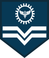
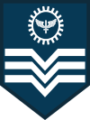
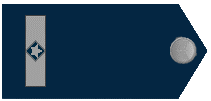
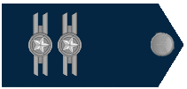
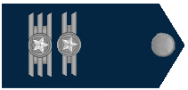
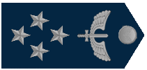
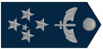

Um soldado, é uma pessoa que trabalha nas forças armadas recebendo treino e equipamento para defender o referido país e os seus interesses. Na sua condição de membro das forças armadas tem o estatuto de militar. Apesar de ser um militar, pode desempenhar funções não combatentes, ligadas à tropa.
Patente: Soldado
Cabo:
Cabo é um posto existente em várias forças armadas e forças de segurança, normalmente correspondendo à primeira ou segunda graduação que pode ser obtida por um soldado.
 Patente: Cabo
Terceiro, Segundo e Primeiro Sargento:
As responsabilidades dos sargentos são diferentes de instituição militar para instituição militar. Por exemplo, podem ser responsáveis por comandar uma fração de tropa, constituída por 9 a 13 militares, ou ser responsáveis pela função de adjunto ao comando de um pelotão com 30 a 50 militares. Em algumas instituições militares, os sargentos têm apenas responsabilidades administrativas e de instrução de soldados. Em outras, porém, podem assumir responsabilidades de comando em combate.
 Patente: Terceiro Sargento Patente: Segundo Sargento Patente: Primeiro Sargento
Suboficial:
Suboficial é a última e mais elevada posição de graduado, imediatamente abaixo do aspirante a oficial. Não é, portanto, integrante do oficialato.
 Patente: Suboficial
Oficiais Subalternos:
Aspirante:
Aspirante a oficial é o posto de um membro das forças armadas, durante o período final da sua formação para oficial, antes de ser promovido ao posto inicial de oficial subalterno.
Patente: Aspirante
Segundo Tenente:
Segundo Tenente é o posto inicial, fazendo parte do círculo dos oficiais subalternos no Brasil. Situa-se entre os postos de Aspirante e Primeiro Tenente.
Patente: Segundo Tenente
Primeiro Tenente:
Primeiro Tenente é o posto secundario, fazendo parte dos oficiais subalternos no Brasil. Situa-se entre os postos de Capitão e Segundo Tenente.
Patente: Primeiro Tenente
Oficiais Intermediários:
Capitão:
Capitão é um posto de oficial existente na maioria dos exércitos do mundo e ao qual corresponde, o comando de uma companhia de soldados. O posto de capitão, também existe em muitas forças aéreas e forças de segurança.
Patente: Capitão
Oficiais Superiores:
Major:
Major conforme o país, pode ter significados diferentes. Na maioria dos países, corresponde ao primeiro posto de oficial superior, sendo superior a capitão e inferior a tenente-coronel. No entanto, em outros países a designação "major" é dada ao posto mais graduado de suboficial.
 Patente: Major
Tenente-Coronel:
Tenente-coronel é uma patente militar de oficial superior, situada entre a de major e a de coronel. Existe em quase todos os exércitos e forças aéreas do mundo. É equivalente à patente de capitão de fragata nas marinhas de Portugal e do Brasil.
 Patente: Tenente Coronel
Coronel:
Coronel esta patente é também utilizada em diversas forças aéreas e forças de segurança. Muito mais raramente, é utilizada em forças navais.
Patente: Coronel
Oficiais Generais:
Brigadeiro:
Brigadeiro constitui um posto ao qual compete tradicionalmente o comando de uma brigada.
Em algumas forças armadas, existe o posto de general de brigada, que, apesar de ter caraterísticas semelhantes ao de brigadeiro, correspondendo frequentemente a um general de duas estrelas.
Patente: Brigadeiro
Major-Brigadeiro:
Major-Brigadeiro nos países em que esta designação é utilizada, normalmente, o tenente-general tem uma patente, inferior à de general e superior à de major-general. Nos exércitos da Norte geralmente corresponde à graduação de oficial general de 3 estrelas ou seja, de OF-8.
Patente: Major-Brigadeiro
Tenente-Brigadeiro:
Tenente-brigadeiro é um oficial general de quatro estrelas da Força Aérea Brasileira de posto imediatamente superior ao de Major-brigadeiro e inferior ao de Marechal-do-ar.
Tenente-Brigadeiro é o posto mais alto da Aeronáutica, tendo abaixo os seguintes postos, Major-Brigadeiro, Brigadeiro, Coronel, Tenente-Coronel, Major, Capitão, Tenente, Sub-Oficial, Sargento, Cabo, Soldado, Recruta.
 Patente: Tenente-Brigadeiro
Marechal do Ar:
Marechal do Ar é a patente máxima na Força Aérea Brasileira, constituída por 5 estrelas. A patente Marechal só é adquirida em tempos de guerra.
 Patente: Marechal do Ar
Desenvolvido por:
Erick Takeshi Hawakaya
João Paulo Francisco Timóteo
Leandro Satoshi Tanaka Sakamoto
Paulo Henrique Primon da Silva